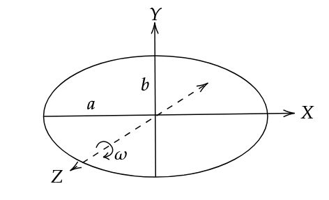

There are many methods to find the moment of inertia. Here, we shall find the corresponding moments of inertia about the X axis and the Y axis, and use perpendicular axis theorem to find the moment of inertia about the Z axis. We shall work in Cartesian coordinates.

The equation of the given ellipse is
\[\frac{x^2}{a^2} + \frac{y^2}{b^2} = 1\]
Which can be written as,
\[x = \frac{a}{b} \sqrt{b^2 - y^2}\tag1\]
The moment of inertia of any body is generally given by,
\[I = \int_{Body} r^2 dm\]
Here, \(dm\) will be,
\[dm = \sigma dA = \frac{m}{\pi a b} dx dy\]
Where, \(\sigma\) is the superficial density.
Hence, we can write,
\[I_{XX'} = \int_{-x}^{x} \int_{-b}^{b} y^2 \frac{m}{\pi a b} dx dy\]
Where, \(x\) is given by eq. (1).
\[\implies I_{XX'} = \int_{-b}^b \frac{2}{b} \sqrt{b^2 - y^2} \; y^2 \; \frac{m}{\pi b} dy\]
\[I_{XX'} = \frac{2m}{\pi b^2} \int_{-b}^b y^2 \sqrt{b^2 - y^2} \; dy\]
Steps for integral
\[\int_{-b}^b y^2 \sqrt{b^2 - y^2} \; dy\]
We shall use a substitution,
\[y = b \sin \alpha\]
\[\implies dy = b \cos \alpha d \alpha\]
And corresponding change of limits, we get
\[= \int_{-\frac{\pi}{2}}^{\frac{\pi}{2}} b^2 \sin^2 \alpha ( b \cos \alpha) \; b \cos \alpha d \alpha\]
\[= b^4 \int_{-\frac{\pi}{2}}^{\frac{\pi}{2}} \sin^2 \alpha \cos^2 \alpha \; d \alpha\]
Multiplying and dividing by 4 to use,
\[4\sin^2 \alpha \cos^2 \alpha = \sin^2 2 \alpha\]
\[\sin^2 2 \alpha = \frac{1 - \cos 4 \alpha}{2}\]
\[= \frac{b^4}{4} \left( \int_{-\frac{\pi}{2}}^{\frac{\pi}{2}} \frac{1}{2} d \alpha - \int_{-\frac{\pi}{2}}^{\frac{\pi}{2}} \frac{cos 4 \alpha}{2} d\alpha \right)\]
\[= \frac{b^4}{4} \left( \frac{\pi}{2} - \frac{1}{8} \sin 4 \alpha \Bigr|_{-\frac{\pi}{2}}^{\frac{\pi}{2}} \right)\]
\[= \frac{b^4}{4} \left( \frac{\pi}{2} - 0 \right)\]
\[\implies \int_{-b}^b y^2 \sqrt{b^2 - y^2} \; dy = \frac{\pi b^4}{8}\]
Which gives,
\[I_{XX'} = \left( \frac{2m}{\pi b^2} \right) \frac{\pi b^4}{8} = \frac{m b^2}{4}\]
Similarly, by analogy,
\[I_{YY'} = \frac{m a^2}{4}\]
Using perpendicular axis theorem,
\[I_\perp = I_{XX'} + I_{YY'}\]
\[= \frac{m a^2}{4} + \frac{m b^2}{4}\]
\[\therefore I_\perp = \frac{m}{4} (a^2 + b^2)\]